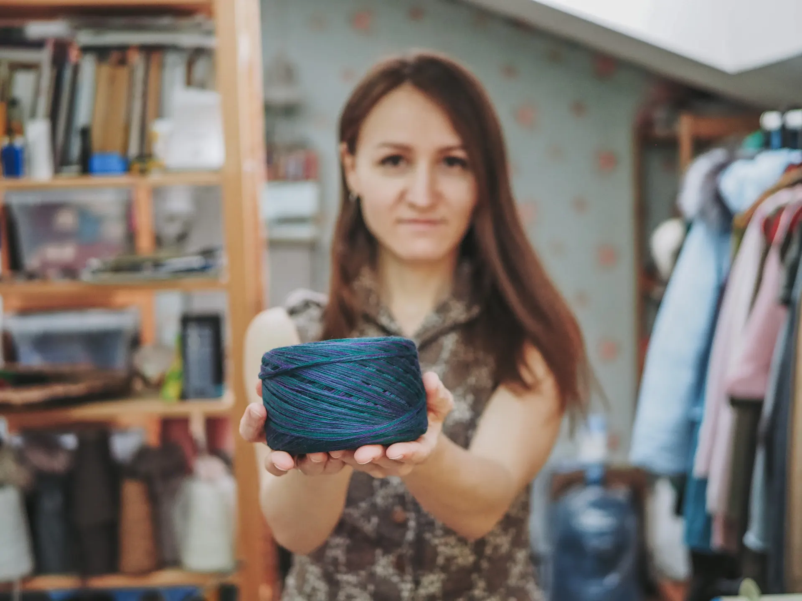
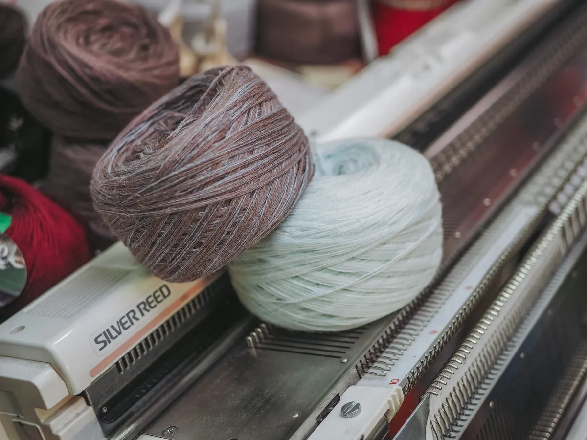
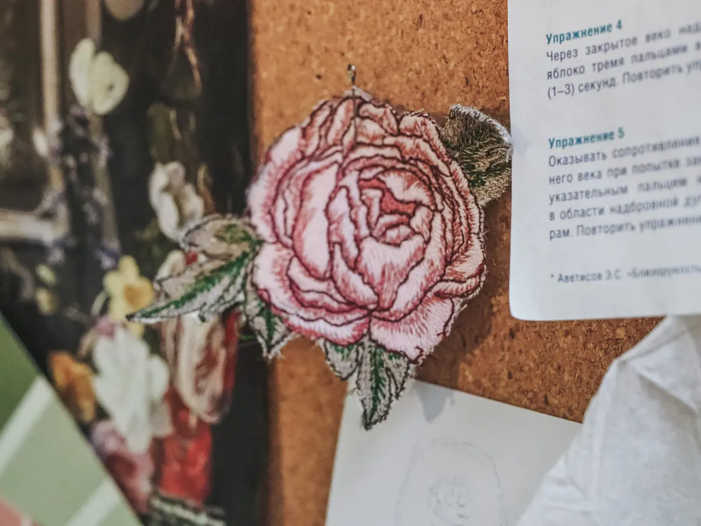
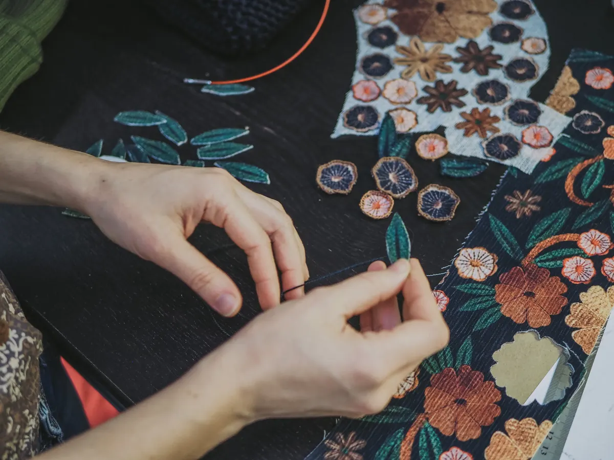

Ателье и трикотаж · Екатеринбург
Valis: ателье и ремонт одежды в Екатеринбурге с записью без звонка
Подшить, ушить, заменить молнию или сшить на заказ - выберите услугу и время, запись в одном сообщении. Стоимость назовёт мастер после осмотра вещи.
- Запись одним сообщением
- Ждём: пн-пт 10:00–17:00
- 5,0 и 70 отзывов на Яндекс.Картах

Услуги
Стоимость называем после осмотра вещи: она зависит от ткани, сложности и срочности.
Что можно выбрать
- Пошив одеждыв рубриках карточки: ателье по пошиву одеждыуточнить
- Ремонт одеждыв рубриках карточки: ремонт одеждыуточнить
- Вязаные изделия на заказв отзыве: трикотажная манишка на заказуточнить
- Подбор пряжив отзыве: мастер сама подобрала пряжууточнить
Как записаться
Пишете нам
Расскажите, что нужно сделать с вещью, или выберите услугу, день и время в форме ниже.
Уточняем детали
Мастер подтверждает время, называет срок и стоимость после осмотра.
Приносите вещь
Адрес: Екатеринбург, улица 8 Марта, 8Д.



Что пишут гости
Шьют в срок
В отзыве: выбирала ателье по отзывам, всё сделано качественно, в срок.
Подбор пряжи под заказ
В отзыве: мастер сама подобрала пряжу, учла все важные нюансы.
Качество ткани
В отзыве: качество ткани на высоте, шьют быстро, цена малая.
Отзывы с Яндекс.Карт
«Хорошее ателье,могу сказать качество ткани на высоте,шьют быстро вежливый персонал,малая цена,единственный минус тот что там очень много посетителей но мешает не сильно,хорошо 5 ниток из 5»
Айдан Фатхулин · 13 июля 2025
«Выбирала ателье по отзывам. Очень рада, что выбрала это ателье. Всё сделано качественно,в срок. Приятно иметь дело с профессионалами! Только положительные эмоции.)»
Наталья Пегашева · 29 октября 2025
«Заказала у Алисы трикотажную манишку. Заказ был выполнен с отличным качеством, в срок. Мастер сама подобрала пряжу, учла все важные нюансы. В итоге получилось модно, стильно, аккуратно, как и хотелось!»
Марина Стольникова · 6 апреля
Отзывы с карточки на Яндекс.Картах.
Частые вопросы
Как записаться?
Выберите услугу, день и время в форме на странице или напишите в мессенджер. Мастер подтвердит запись.
Где вы находитесь?
Екатеринбург, улица 8 Марта, 8Д. пн-пт 10:00–17:00.
Сколько это стоит?
Стоимость называем после осмотра вещи: она зависит от ткани, сложности и срочности.
Выберите время - подтвердим запись
- Адрес
- улица 8 Марта, 8Д, Екатеринбург
- Часы
- пн-пт 10:00–17:00
- Телефон
- +7 (965) 532-54-88